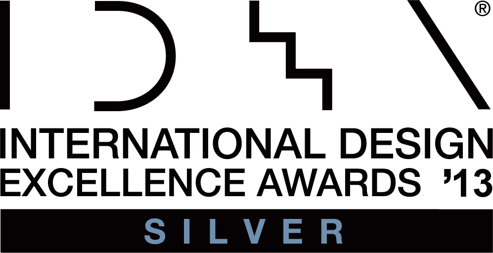
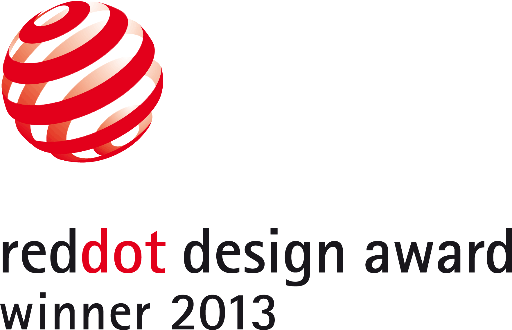
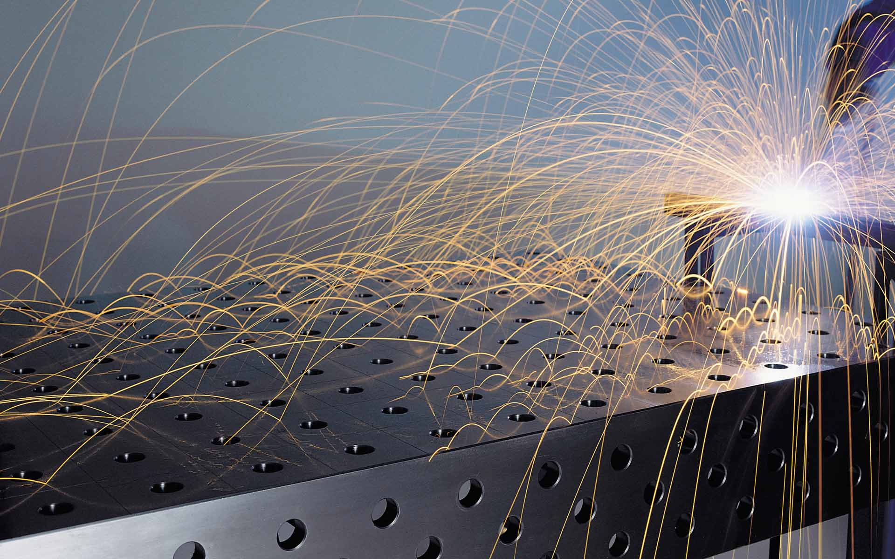
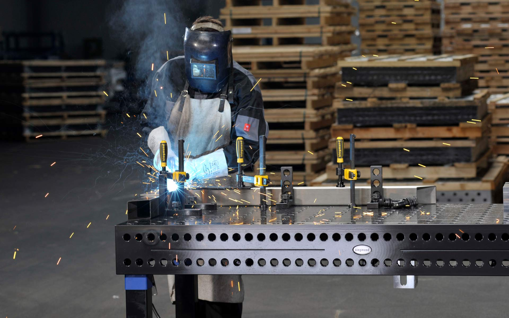

Siegmund Professional Extreme
Welding Table
Siegmund Professional Extreme
Schweißtisch
The Professional Extreme welding table is designed for optimum flexibility and precision at millimetre accurate positioning and fixing of construction components.
It is used as a welding and clamping table or
as measuring table at metalworking shops and industrial plants.
The welding table has now rounded bore holes and edges instead of chamfered bore holes and edges – with
clear benefits: Fixing bolts almost “glide” smoothly into the bore holes without irritating tilting
which enables a quick and comfortable working. The rounding prevents damage to the edges when getting in
tough contact with tools and offers a comfortable haptic feeling. The welding table offers even more
clamping possibilities than the predecessor due to double bore hole lines at the table side.
Its quality sets a new benchmark, because it is consequently planned for extreme load and long
life-time. This is accomplished by the use of pre-hardened steel in combination with a plasma nitrided
surface finishing. The table has overall a hardness of 700 Vickers (Comparison: steel rasp = 600
Vickers) and is thereby extremely scratchresistant, more rust-resistant and has a less adhesion of
welding spatters. The plasma-nitrided surface enables ideal wear resistance and corrosion resistance,
favourable for a long lifetime. Moreover, the plasma-nitriding is one of the most ecological hardening
processes as only nitrogen, hydrogen and oxygen are used. The average lifetime is 50 years if it is
properly maintained.
Selić Industriedesign service: Design concept, design sketches, design consultation, CAD design support,
CAD modeling, design refinement, processing of design data for the engineering department
The Professional Extreme welding table is designed for optimum flexibility and precision at millimetre accurate positioning and fixing of construction components.
It is used as a welding and clamping table or as measuring table at metalworking shops and industrial
plants.
The welding table has now rounded bore holes and edges instead of chamfered bore holes and edges – with
clear benefits: Fixing bolts almost “glide” smoothly into the bore holes without irritating tilting
which enables a quick and comfortable working. The rounding prevents damage to the edges when getting in
tough contact with tools and offers a comfortable haptic feeling. The welding table offers even more
clamping possibilities than the predecessor due to double bore hole lines at the table side.
Its quality sets a new benchmark, because it is consequently planned for extreme load and long
life-time. This is accomplished by the use of pre-hardened steel in combination with a plasma nitrided
surface finishing. The table has overall a hardness of 700 Vickers (Comparison: steel rasp = 600
Vickers) and is thereby extremely scratchresistant, more rust-resistant and has a less adhesion of
welding spatters. The plasma-nitrided surface enables ideal wear resistance and corrosion resistance,
favourable for a long lifetime. Moreover, the plasma-nitriding is one of the most ecological hardening
processes as only nitrogen, hydrogen and oxygen are used. The average lifetime is 50 years if it is
properly maintained.
Selić Industriedesign service: Design concept, design sketches, design consultation, CAD design support,
CAD modeling, design refinement, processing of design data for the engineering department


Images und videos © Bernd Siegmund GmbH